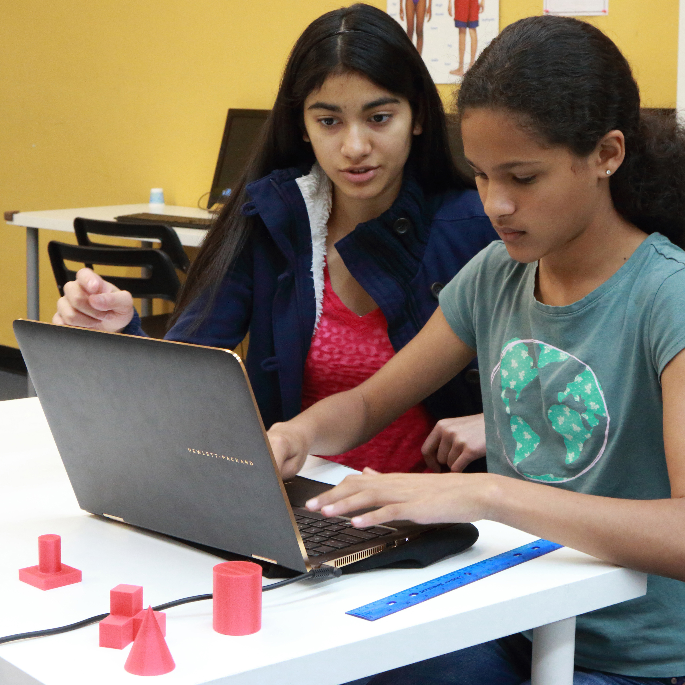

I’m the president of the Girls Who Code San Jose club. At this club, we learn to program in HTML, CSS, and JavaScript. In fact, I’m making this website as a project for this club! (See if you can spot me in this picture :)
Girls Who Code
I’m the president of the Girls Who Code San Jose club. At this club, we learn to program in HTML, CSS, and JavaScript. In fact, I’m making this website as a project for this club! (See if you can spot me in this picture :)
3D Printing
I’ve taught a 5 week 3D printing camp and I hope to start a one-week boot camp teaching middle school girls all about 3D printing this summer. I really think 3D printing is a great experience and can lead to amazing opportunities in engineering and design. Find more info here.
Girls Who Code Summer Camp
In August 2015, I created and taught a summer camp with my fellow GWC officers for 4th through 6th grade girls. It was one of the best experiences I’ve ever had and I’m so glad I was able to affect so many girls.
ArtReach
I’m the Public Relations officer for Lynbrook High’s ArtReach club. At ArtReach, students make art for the community. We create cards to give out at hospitals, toys for animal shelters, and paint murals to brighten up our community! As the PR officer, I create all the promotional material for the club.
Art and Comics
I’ve been drawing and creating art all my life, but in the past couple years, I’ve been taking it seriously. I’ve dedicated a lot of my free time to studying digital art so I can improve my work. You can see my art in the Tumblr link below.